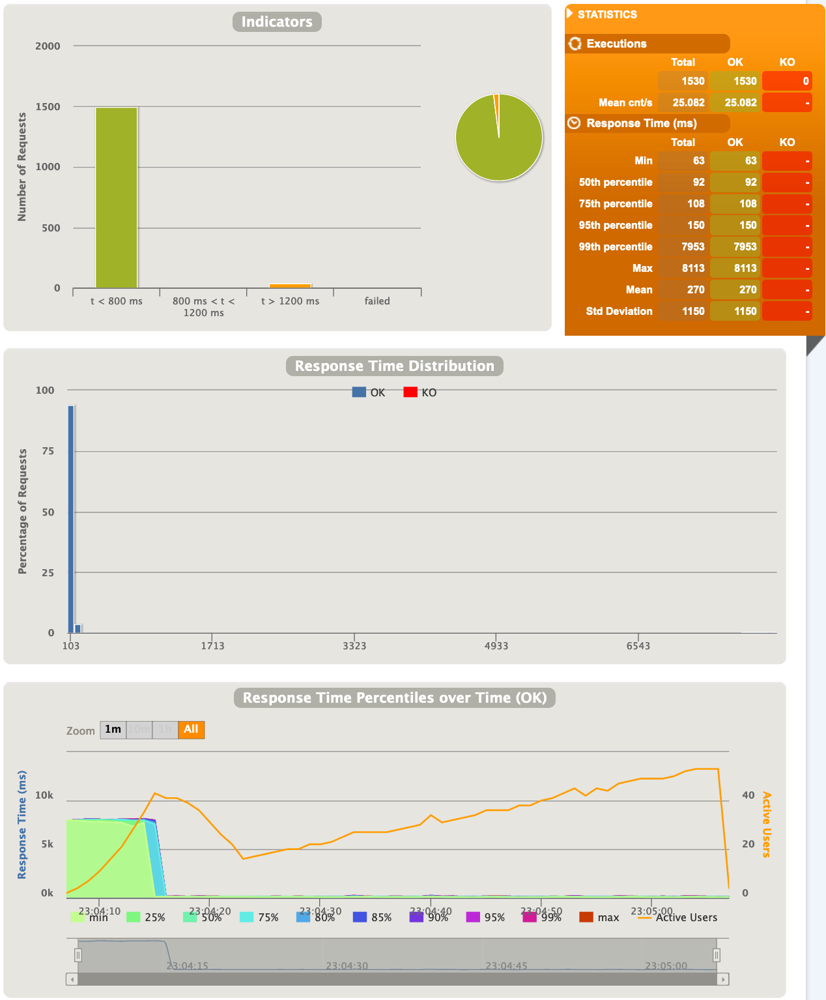
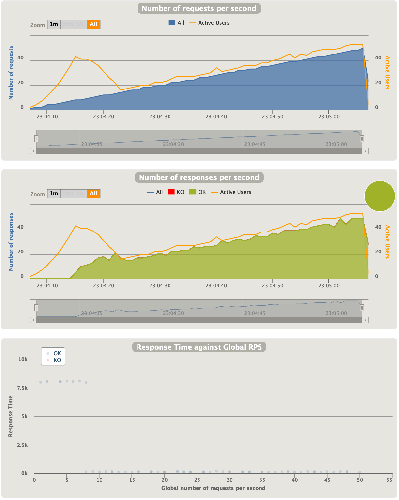
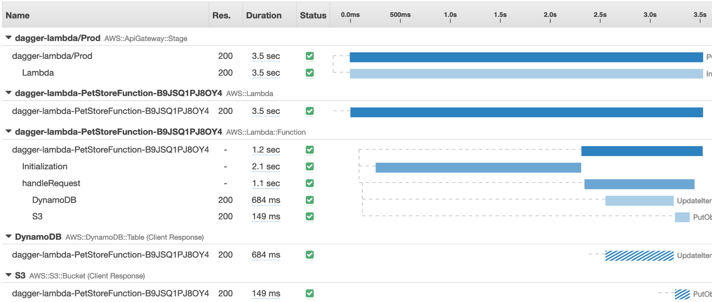

To determine the behavior under load, we are running a load test for 1 minute, starting with 1 user (which determines the concurrency) and increase it linearly, until we reached 20 users after one minute (meaning we are increasing the concurrency by 1 after each 3 seconds for 1 minute). We are running this test 10 times per service implementation against a new deployed instance and report the best result.
To determine the cold-start time, we are measure 10 cold-starts and report the best one for each service implementation.
The load test is running in an AWS Cloud9 instance (m5.large) in the same region as we have deployed our services.
We are using the Scala based load generating tool Gatling to load test our different service implementations. Each service comes with a Scala based load test in the folder src/test/scala/xxxLoadTest.scala.
In a future version, we may integrate the load test scenario directly into our Maven project, leveraging the Gatling Maven Plugin.
At the end of a load test, Gatling creates a nice report about the performance and throughput from a client perspective:


To get started with Gatling, please follow the Quickstart and the Advanced Tutorial.
In addition, we are using AWS X-Ray to sample some requests to get better insights where we spend our time by processing these requests.

Because we have situations where we don’t want or cannot use Amazon X-Ray, we use Javaagent Instrumentation in addition to get better insights.
You will get similar output like this (package names dropped), which gives you an idea where you spend most of the time executing the request. You have to specify the classes, which should be instrumented:
ApacheHttpClient.createClient(ApacheHttpClient$DefaultBuilder,AttributeMap) : 323
DefaultDynamoDbClient.init(BaseAwsJsonProtocolFactory$Builder) : 79
ObjectMapper._findRootDeserializer(DeserializationContext,JavaType) : 140
ObjectMapper._readMapAndClose(JsonParser,JavaType) : 142
ObjectMapper.readValue(String,JavaType) : 161
ObjectMapper.readValue(java.lang.String,java.lang.Class) : 165
ApacheHttpClient.execute(HttpRequestBase) : 429
ApacheHttpClient.access$500(ApacheHttpClient,HttpRequestBase) : 429
DefaultDynamoDbClient.putItem(PutItemRequest) : 707
ApacheHttpClient.execute(HttpRequestBase) : 251
ApacheHttpClient.access$500(ApacheHttpClient,HttpRequestBase) : 251
DefaultS3Client.putObject(PutObjectRequest,RequestBody) : 329
CreatePetLambdaHandler.handleRequest(APIGatewayV2ProxyRequestEvent,Context) : 1428